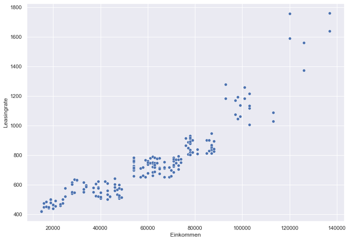

2. Create Dataset for Clustering¶
Import Dependencies¶
import pandas as pd
import numpy as np
import seaborn as sns
import random
Import Data¶
df = pd.read_csv('/Users/cenkyagkan/Desktop/OMM/7.Semester/Applied Data Analytics/Clustering/Mall_Customers.csv')
df
| CustomerID | Gender | Age | Annual Income (k$) | Spending Score (1-100) | |
|---|---|---|---|---|---|
| 0 | 1 | Male | 19 | 15 | 39 |
| 1 | 2 | Male | 21 | 15 | 81 |
| 2 | 3 | Female | 20 | 16 | 6 |
| 3 | 4 | Female | 23 | 16 | 77 |
| 4 | 5 | Female | 31 | 17 | 40 |
| ... | ... | ... | ... | ... | ... |
| 195 | 196 | Female | 35 | 120 | 79 |
| 196 | 197 | Female | 45 | 126 | 28 |
| 197 | 198 | Male | 32 | 126 | 74 |
| 198 | 199 | Male | 32 | 137 | 18 |
| 199 | 200 | Male | 30 | 137 | 83 |
200 rows × 5 columns
Create custom dataset¶
df['Einkommen'] = df['Annual Income (k$)']*1000
df = df.drop(['Annual Income (k$)', 'Spending Score (1-100)', 'CustomerID'], axis = 1)
df
| Gender | Age | Einkommen | |
|---|---|---|---|
| 0 | Male | 19 | 15000 |
| 1 | Male | 21 | 15000 |
| 2 | Female | 20 | 16000 |
| 3 | Female | 23 | 16000 |
| 4 | Female | 31 | 17000 |
| ... | ... | ... | ... |
| 195 | Female | 35 | 120000 |
| 196 | Female | 45 | 126000 |
| 197 | Male | 32 | 126000 |
| 198 | Male | 32 | 137000 |
| 199 | Male | 30 | 137000 |
200 rows × 3 columns
def rate(x):
if x["Einkommen"] < 15001:
return random.randint(380,440)
elif x["Einkommen"] > 15001 and x["Einkommen"] < 25000:
return random.randint(440,500)
elif x["Einkommen"] >= 25000 and x["Einkommen"] < 50000:
return random.randint(500,650)
elif x["Einkommen"] > 50000 and x["Einkommen"] < 75000:
return random.randint(650, 800)
elif x["Einkommen"] > 75000 and x["Einkommen"] < 90000:
return random.randint(800,950)
elif x["Einkommen"] > 90000 and x["Einkommen"] < 120000:
return random.randint(1000, 1300)
elif x["Einkommen"] >= 120000:
return random.randint(1300, 1800)
df["Leasingrate"] = df.apply(lambda x: rate(x), axis=1)
df.head(20)
| Gender | Age | Einkommen | Leasingrate | |
|---|---|---|---|---|
| 0 | Male | 19 | 15000 | 423.0 |
| 1 | Male | 21 | 15000 | 420.0 |
| 2 | Female | 20 | 16000 | 474.0 |
| 3 | Female | 23 | 16000 | 449.0 |
| 4 | Female | 31 | 17000 | 451.0 |
| 5 | Female | 22 | 17000 | 486.0 |
| 6 | Female | 35 | 18000 | 443.0 |
| 7 | Female | 23 | 18000 | 449.0 |
| 8 | Male | 64 | 19000 | 477.0 |
| 9 | Female | 30 | 19000 | 499.0 |
| 10 | Male | 67 | 19000 | 499.0 |
| 11 | Female | 35 | 19000 | 500.0 |
| 12 | Female | 58 | 20000 | 461.0 |
| 13 | Female | 24 | 20000 | 467.0 |
| 14 | Male | 37 | 20000 | 440.0 |
| 15 | Male | 22 | 20000 | 440.0 |
| 16 | Female | 35 | 21000 | 492.0 |
| 17 | Male | 20 | 21000 | 456.0 |
| 18 | Male | 52 | 23000 | 458.0 |
| 19 | Female | 35 | 23000 | 469.0 |
sns.set(rc={'figure.figsize':(11.7,8.27)})
sns.scatterplot(data=df, x="Einkommen", y="Leasingrate");

df.to_csv(r'/Users/cenkyagkan/Desktop/OMM/7.Semester/Applied Data Analytics/Clustering/final_dataset_cluster.csv', index = False)